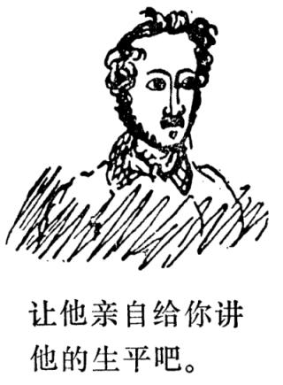

因为黑格尔明显地把整体同不完善的单一的东西区别开来。——对黑格尔的损害莫过于他自己的学生；只有几个人，如甘斯，罗生克兰茨，卢格等才配称为黑格尔的学生。而某个奥斯渥特·马尔巴赫是所有糊涂人中non plus ultaFN7。多么了不起的人物！——牧师马莱特先生在《不来梅教会信使》杂志上称黑格尔体系为“松散的语言”。97如果确实如此，牧师本人就糟了，因为要是这些大块大块的东西，这些花岗岩思想散落下来，哪怕是这座巨石建筑的一块石头都会不仅把牧师马莱特先生砸碎，而且能把整个不来梅砸碎。例如，要是把世界历史是自由概念的发展这一思想强加在某一个不来梅牧师的身上，他会发出什么样的悲鸣啊！ 2月1日。今天无论如何一定要把信发出去。

俄国人开始变得天真起来；他们宣称，似乎同切尔克斯人打这一仗而牺牲的人还没有拿破仑的一次不大的战役所牺牲的人多。我没有料到，象尼古拉这样野蛮的人竟会如此天真。
我听说，柏林人十分恨我。我在给他们的信中，把托路克和奈安德骂了几句，我也没有把兰克列入superosFN8，这使他们气坏了。而且，我还写信给霍伊泽尔，大讲特讲贝多芬。——我读了维也纳的格里尔帕尔策写的很可爱的喜剧《谁撒谎，谁倒霉！》274，它比我们现在的老一套喜剧高明得多。深受奥地利书报检查机关的沉重压迫的善良而自由的精神处处可见。你可以清楚地看到，作者花了多少功夫把豪门贵族描写得不致有损贵族检查官的体面。O tempores，o moria，Donner und DoriaFN9，今天是2月5日，很惭愧，我太懒了，but I cannot help itFN10，上帝作证，我现在什么也不干。好几篇文章已经动笔写了，可是没有进展，每当我在晚上想写诗的时候，往往由于吃得太饱而无法抗拒睡意。——要是今年夏天我能去丹麦，霍尔施坦，日德兰半岛，西兰岛和吕根岛旅行，我会十分满意的。我要争取让我的老头儿把弟弟FN11送到这里来，我将把他带在身边。我渴望看看大海，我会写出多有趣的旅行随笔呀！可以把这些随笔和一些诗一起出版。现在天气好极了，可是我不能出游，我十分想出去，多倒霉呀！
这胖子是糖业经纪人，他刚从屋里出来，他的口头禅是：“根据我的意见。”当他在交易所和某人谈完话，要离开时一定要说：“祝你健康！”他的姓名是约·赫·贝格曼。
这里也有令人感动的人物。我这就给你描绘另一幅生活景象：
这个老头儿每天早晨喝得醉醺醺，站在自己家门口，捶着胸口大叫：“Ick bin Borger！”FN12；这就是说，感谢你，上帝，我不象那些汉诺威人，奥登堡人，更不象那些法国人，我是一个不来梅Borger tågen båren Bremer Kind！FN13
48 “黑格尔门徒”一词是在反动的历史学家和政论家亨·莱奥的著作《黑格尔门徒。所谓指控永恒真理的文献和论据》（《Die Hegelingen．Actenstücke und Belege zu der s．g．Denunciation der ewigen Wahrheit》）于1838年在哈雷出版以后才被使用的。该书是针对施特劳斯、卢格、米希勒和其他青年黑格尔派的，莱奥鄙薄他们，称他们为“黑格尔门徒”。——第53、212、301、313、370、498、545、591页。 97 见弗·马莱特的《前言》（《Vorwort》），载于1840年1月12和19日《不来梅教会信使》第1期和第2期。——第105、547页。 120 1812年的西班牙宪法是迎合自由贵族和自由资产阶级的利益通过的，它通过议会限制了国王的权力，消除了某些封建主义残余。1814年，由于封建贵族反动势力在西班牙取得胜利，1812年的宪法被废除。在十九世纪上半叶，这部宪法是西班牙和欧洲其他许多国家的自由主义立宪运动的一面旗帜。——第147、549页。 267 大·弗·施特劳斯《鉴别和评述》（《Charakteristiken und Kritiken》），神学、人类学和美学领域杂文集，1839年莱比锡版。这个集子的第一篇文章是献给施莱艾尔马赫尔和道布的，标题是《施莱艾尔马赫尔和道布对当代神学的意义》（《Schleiermacher und Daub，in ihrer Bedeutung für die Theologie unserer Zeit》）。第六篇文章标题是《现代狂人故事》（《Geschichten Besessener neuerer Zeit》）。——第540、546页。 270 在1840年1月1、4、8、11、15、18、22和25日《福音派教会报》第1―8号的题为《前言》（《Vorwort》）的文章中反驳了克·梅尔克林《现代虔诚主义述评》（《Darstellung und Kritik des modernen Pietismus》）―书（1839年斯图加特版）。
关于虔诚主义，见注9。——第544页。 271 袄教徒是印度和伊朗的一种宗教教派的代表，奉火、空气、水和土为神，即琐罗亚斯德教的信徒。
自由思想家是十六世纪中叶具有民主性质并在法国和瑞士广泛传播的宗教泛神论教派的代表。自由思想家曾同加尔文及其信徒进行斗争，但遭到失败。（关于加尔文教，见注11）。——第545页。 272 见1840年《基督教神学和一般科学问题文献通报》第1、2期中的《出版者关于出版十周年序》（《Vorwort des Herausgebers zum zehnten Jahrgange》）一文。——第546页。 273 根据福音传说，在巴勒斯坦迦拿城的一次婚宴上，基督把水变成了酒（圣经《新约·约翰福音》第2章）。——第546页。 274 F．Grilparzer．《Weh’dem，der lügt！》Lustspiel in fünf Aufzügen．Wien，1840．——第547页。 275 恩格斯指的是福音教派主教、宫廷传教士鲁·弗·艾勒特1840年1月19日在柏林王宫的骑士大厅发表的演说。演说辞载于1840年1月20日《普鲁士国家总汇报》第20期。——第549页。 276 指卡·罗泰克《各等级的通史，自古代至1831年》（《Allgemeine Weltgeschichte für alle Stände，von den frühesten Zeiten bis zum Jahre 1831》）1833年斯图加特版第4卷。通史于1831年开始出版。——第549页。 277 烧炭党人（Carbonaro——直译是：烧木炭工人）是十九世纪前三十年存在于意大利、十九世纪二十年代存在于法国的密谋性团体的成员。意大利的烧炭党人包括城市资产阶级、资产阶级化的贵族、军官、小资产阶级和农民的代表人物，他们所抱的目的是实现民族解放、恢复意大利的统一和实行政治改革。法国的烧炭党人包括各种政治派别的代表人物，其任务是推翻波旁王朝的专制制度。——第550页。